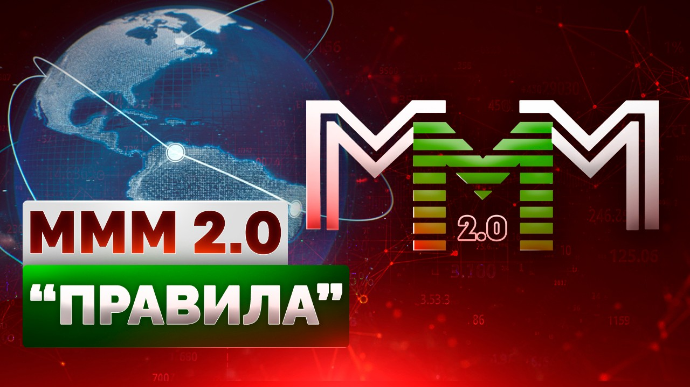

Регистрация в телеграм-боте
Вернуться на "ПРАВИЛА". Кратко.

ВНИМАНИЕ! Соглашаясь с "правилами", что написаны ниже, — действуя в дальнейшем по этим моим рекомендациям, — Вы подтверждаете, что уже ознакомились с ПРЕДУПРЕЖДЕНИЕМ и принимаете дальнейшее решение участвовать в здравом уме и трезвой памяти.
А теперь совсем подробно. Тщательно и по пунктам! :-))
Сразу в Телеграм-бот переходите или на имейл напишите Antisystemmm@gmail.com -- это ни к чему Вас не обязывает! Там Вас встретят дежурные консультанты, которые Вам всё с удовольствием объяснят, если что-то неясно. И, вообще, дадут любые консультации по работе МММ 2.0. Спрашивайте, не стесняйтесь!
В сущности же, это не правила никакие, а просто моё мнение. Мысли свои записываю, предположения. Рекомендации. Напоминаю на всякий случай в очередной раз.
1. Глобальная Система Взаимопомощи МММ 2.0 — это неформальное объединение людей по всему миру, которые безвозмездно переводят друг другу напрямую свои свободные средства в надежде через некоторое время получать такую же безвозмездную помощь от других людей предположительно в большем объеме.
Этакая социальная структурированная финансовая сеть, или Глобальная Касса Взаимной Помощи. Интернет – никаких границ.
У нас нет ни юрлица, ни единого счета, на который бы стекались все деньги, – нам всё это не требуется, чтобы безвозмездно обмениваться деньгами друг с другом напрямую. У нас нет никакой компании – только люди по всему миру, которые безвозмездно помогают друг другу напрямую. А Система – это платформа, которая просто всех связывает между собой.
2. Источником любой «официальной» (исходящей от меня – Данила Юсупова) информации относительно МММ 2.0 являются мои видеообращения на ютуб-канале: https://youtube.com/@BazaMavrodi
🟡Сайт: https://BazaMavrodi.com (в РФ работает... сами догадаетесь как)
🔴Блог в Телетайп: https://teletype.in/@mmm2.0_admin/Main
🔵Прямая ссылка на гугл-документы: https://drive.google.com/drive/folders/1-z30pMvsgNZB-dE-6927A_pTf2_-o23o
Обо всех новых источниках информации я буду сообщать лично.
3. Все участники неформально структурируются — делятся на ячейки. «Во главе» каждой ячейки стоит консультант.
Во главе всех консультантов – стоит управляющий. Главный консультант, не более того.
Консультанты — это точно такие же участники! По сути, ответственные за общее дело координаторы, помогающие участникам разобраться в Системе, отвечающие на вопросы новичков и т.п. Консультанты получают «бонусы консультанта» в абстрактных Мавро в размере 5% от оказанной помощи всеми участниками, которые попали к ним в ячейку. Более подробно про «бонусы консультанта» читайте ниже соответствующий пункт «правил».
Вывод: сразу стремитесь стать консультантом! В этом случае Вы будете дополнительные бонусы получать в абстрактных Мавро! Особенно это актуально для ответственных людей, которые готовы трудиться за вознаграждение. Ищете работу? Вы её нашли! Помогать людям – это прекрасная работа!
❗️ Внимание! Консультанты первыми в личку никогда не пишут! Всё общение происходит строго через телеграм-бота и через бота техподдержки, который указан в основном боте. Консультант может дать Вам свой телеграм-ник только для разрешения спорной ситуации, когда требуется видеоподтверждение. Например, если Вы отправили деньги, а получатель не подтверждает и т. п. Сам же консультант никогда первым в личку не пишет – это всё мошенники! Будьте бдительны.
4. Ячейки − это просто условные названия звеньев единой системы. Реально в ячейке может быть несколько тысяч человек (да хоть миллион! :-)). Все ячейки образуют единую систему с горизонтальными связями между всеми участниками. Совершенно не важно, в какой ячейке Вы находитесь, – когда Вы оказываете помощь, Вы оказываете её другому участнику напрямую, который, наверняка будет из другой ячейки. Бот (программный алгоритм) настроен на стыковку оказывающих и запрашивающих помощь участников по определенным математическим алгоритмам и ко всем участникам относится одинаково. В смысле, ему не важно, из какой Вы ячейки.
Единая горизонтальная система. В которой участники – один за всех, и все за одного! Помните, чей это девиз?
Если Вы из-за рубежа, то помощь можете оказывать/получать в т.ч. и в криптовалюте (USDT). Ведь наша виртуальная общая тумбочка – действительно глобальная. Интернационал! Интернет, никаких границ.
Один технический нюанс, который многих беспокоит: жители России помогают друг другу, используя нашу банковскую систему, переводя деньги с карты на карту друг другу напрямую, а жители из-за рубежа – используя криптовалюту («стейблкоин» USDT в приоритете, т.к. его курс практически всегда стабилен и соотносится 1:1 с долларом США). Следовательно, если Вы участвуете в рублях, то помощь Вы оказывать и получать будете в рублях – только среди таких же россиян, как и Вы (участники из стран СНГ еще могут быть — Беларусь и другие, в которых есть российские банки). А участники из-за рубежа обмениваются между собой криптой вне зависимости от страны проживания.
5. Чтобы вступить в Глобальную Систему Взаимопомощи МММ 2.0 – зайдите в телеграм-бота и свяжитесь с консультантом техподдержки, нажав соответствующую кнопку в меню бота – участие в МММ 2.0 осуществляется строго через этого бота! Бот является программной IT-средой, которая связывает участников между собой.
В случае блокировки бота (сами понимаете, в каком мире живем) мы просто поднимем ту же базу данных на другом боте. Или даже на сайте. Всё это мы уже успешно отработали в тестовом режиме (прямо сейчас у нас уже есть резервный зеркальный бот, в который Вам достаточно зайти, и у Вас там будет всё то же самое! :-)) Слить базу бота фактически невозможно, потому что мы данные либо не храним, либо шифруем (если их украсть, там будет «абракадабра»). А те данные, что не шифруем, – они обезличены, анонимизированны и к человеку не привязаны (что людям скажут телеграм-ники или телеграм-id?).
Это все создает максимальную защищенность данных и неуязвимость к сбоям или блокировкам. Сама по себе блокировка бота не лишает нас данных, потому что они хранятся не в Телеграм, а в секретном месте (на серверах за пределами РФ, разумеется), так что если заблокируют бота, то мы запустим резервного, а если заблокируют Телеграм, то мы сделаем сайт или приложение, и все будет работать дальше.
Все Ваши реквизиты (номера телефонов для СБП, карт и криптокошельков) хранятся в зашифрованном виде на зарубежных серверах – они не видны даже разработчикам и к Телеграму не имеют никакого отношения. (Да даже если бы они и были видны – что с ними можно сделать? Денег Вам отправить? Позвонить?)
Расчеты абстрактных Мавро ведутся в эксель-таблицах, каждая из которых высылается ботом напрямую участнику после каждого оказания/получения помощи (после любого изменения). Таким образом, вся база данных распылена среди участников. Полная децентрализация и диверсификация.
Мавро – это абстрактная единица МММ. Формально Мавро − это ничто. Некие абстрактные расчётные единицы и не более того. Можно образно сказать, что Мавро − это некий социальный рейтинг участника Глобальной Системы Взаимопомощи. Условная оценка сообществом степени и уровня участия, активности, вкладываемых усилий и труда в развитие общего дела. И, конечно же, соответствующая этому условному рейтингу благодарность участников сообщества, выраженная в том, что «курс» этих абстрактных Мавро предположительно только растет. Как результат, через некоторое время Вы можете запросить больше помощи, чем оказали сами. Оно и понятно почему: такое честное, доброе и открытое дело в этом мире тотального обмана будет только разрастаться, ведь к нашей Системе, очевидно, будут присоединяться всё новые и новые участники! Скажем так: спрос на взаимопомощь, основанную на доверии, среди людей будет только расти − вот и курс социального рейтинга участников, образно выраженный в абстрактных Мавро, тоже предположительно только растёт. Получается этакий Ген доверия! В этом мире, где люди изголодались по простым Человеческим взаимоотношениям.
Можно и по-другому образно описать: Вы даете свои деньги в пользование другим участникам неформального сообщества, – скажем, когда Вы квартиру в аренду сдаете, Вы же, чем дольше сдаете, тем больше арендной платы получаете, – чем дольше Вы даете другим участникам сообщества пользоваться своими деньгами, тем в большем объеме Вас сообщество за это безвозмездно вознаградит. Это просто как пример для понимания.
Образно говоря, «купить» абстрактные Мавро – де-факто означает оказать помощь другим участникам Системы.
Образно говоря, «продать» абстрактные Мавро – де-факто означает запросить помощь у других участников Системы.
7. Для упрощения восприятия абстрактные Мавро имеют «курсы» (как и любая валюта). «Курс покупки», по которому участник может «купить» абстрактные Мавро у Системы, когда оказывает помощь, и «курс продажи», по которому он может их ей «продать», запрашивая помощь. На одну дату курсы «покупки» и «продажи» равны, поскольку наша Система это не валютный обменник и тут никто не зарабатывает на разнице курсов – всё для людей!
Существуют несколько видов абстрактных Мавро:
– Реферал-бонусные (п.16 «Правил»)
Предположительные «курсы» абстрактных Мавро см. в эксель-таблице по ССЫЛКЕ (можете скачать себе).
Базовые абстрактные Мавро-20% Они растут предположительным темпом 20% в месяц (это примерно 9 раз за год)
Бонусные абстрактные Мавро-0%. Их «курсы» не растут, и они заморожены на 30 дней. Если раньше 30 дней помощь запросите (базовые абстрактные Мавро «продадите»), бонусные абстрактные Мавро сгорают.
Бонусные абстрактные Мавро, которые начисляются за определенную активность или Ваш статус. Вам доступен только один бонус, бонусы не суммируются.
– Приветственный бонус для новичков: +10% к абстрактным Мавро на первое оказание помощи. В качестве стимула, так сказать.
– Бонус за оказание помощи в течение 7 суток после её получения: +10% к абстрактным Мавро, если Вы заявляете сумму на оказание помощи в течение 7 суток после получения помощи (нажимаете в боте кнопку «оказать помощь»). Бонус начисляется на всю сумму, даже если Вы решите оказать помощь на бóльшую сумму, чем только что получили в Системе.
– Бонус для социально незащищенных групп участников – студентов, пенсионеров, инвалидов, многодетных и пр.: +10% к абстрактным Мавро на оказание помощи до $300/30000рублей включительно. У нас социально ориентированная Система, поэтому если Вы оказываете помощь на небольшие суммы, то Вам положен такой бонус.
– Бонус за участие в USDT: +5% к абстрактным Мавро. Начисляется только тем, кто участвует в крипте из России. Если Вы из-за рубежа, Вы можете участвовать только в крипте, поэтому и бонус Вам не положен. По понятным причинам сделано это для того, чтобы сделать Систему более универсальной и глобальной. Заодно освоите покупку/продажу крипты. А крипта – это будущее! Которое уже наступило.
❗️ Если Вы подпадаете под несколько критериев, то Вам в любом случае доступен только один бонус. Бонусы между собой не суммируются. Скажем, если Вы пенсионер и впервые оказываете помощь, то Вы получаете только +10% к абстрактным Мавро и за каждое новое оказание также будете получать +10% как пенсионер. Или, если Вы участвуете в USDT из РФ, но при этом решили оказать помощь в течение суток после её получения, то Вы также получите только один бонус +10% к абстрактным Мавро.
По обстоятельствам, возможно, буду вводить новые типы бонусных абстрактных Мавро – депозитные и пр. бонусы за активность. Имейте это в виду! Как говорится, война план покажет. Гибкость — основное преимущество нашей Системы!
8. Предположительные «курсы» абстрактных Мавро назначаются мной лично просто моим волевым решением два раза в неделю, по вторникам и четвергам, и предположительно только растут.
Предположительные темпы роста:
− Абстрактные Мавро-20% в месяц. Оказав помощь, к примеру, на $1000, уже через месяц вы сможете запросить помощь предположительно на $1200.
− Бонусные абстрактные Мавро-0%. Они не растут и заморожены на 30 дней. После разморозки Вы их можете «продать» или конвертировать (см. п.18 и п.19 «правил»).
9. Участник может в любой момент «купить» у Системы любое количество абстрактных Мавро по текущему «курсу», но на сумму не менее $50 (меньшие суммы необходимо согласовывать с консультантом в тех.поддержке), и в любой момент может их ей «продать».
Как Вы успели понять, на самом деле никто в нашей Системе Взаимопомощи ничего не покупает и не продает – это всё я пишу лишь для художественной выразительности, чтобы новичкам было понятнее и привычнее. В МММ 2.0 люди оказывают друг другу безвозмездную помощь. Ну и запрашивают, соответственно. Уверен, Вы это уже уяснили. Повторяю просто на всякий случай.
Если Вы хотите оказать помощь сверх лимита, пишите на почту Antisystemmm@gmail.com письмо с заглавием «КРУПНАЯ СУММА» и согласовывайте лично со мной уникальные условия (предположительный темп роста «курсов» Мавро будет меньше, а также от Вас потребуется график запросов помощи). Сразу скажу, для «крупных» участников подразумевается игра вдолгую.
На реферал-бонусные абстрактные Мавро нет никакого лимита! Приглашайте новичков и развивайте структуру хоть на миллиард долларов! Лимит на оказание помощи нужен по понятным причинам – чтобы толстосумы не смогли выгрести Систему. Но это пока мы ещё в зачаточном состоянии находимся. Как масштабы вырастут, лимиты буду повышать.
Как считается лимит на оказание помощи, если участник уже оказывал и получал помощь? Чтобы Вы не путались в цифрах, сразу замечу, что лимит не имеет отношения к «курсу» абстрактных Мавро!
Лимит = «$5000» минус «общая сумма оказанной помощи» плюс «общая сумма полученной помощи».
Пример: участник оказал помощь на $1000, через некоторое время запросил помощь $2500, значит, лимит на оказание помощи у такого участника станет: $5000-$1000+$2500 = $6500 (а какой смысл запрещать людям возвращать в Систему то, что они здесь и получили?)
Сверхлимит при этом идет в абстрактные Мавро-10%.
Участвуйте некритичными для Вас суммами, повторяю уже в который раз, чтобы лишний раз не дёргаться и других не нервировать.
Что касается лимитов на получение помощи, то с некоторых пор нам приходится руководствоваться «здравым смыслом», который нам, увы, диктует регулятор в лице ЦБ РФ (своим закручиванием гаек и беспредельными законами/определениями). Но мы будем дружно, что называется, держать руку на пульсе и следить за всеми поползновениями финансовых умов нашей страны.
По состоянию на декабрь 2025 года нам известно 7 основных критериев блокировки карт:
1. Частота: более 30 операций с разными физлицами за день (терпимо).
2. Суммы: систематический оборот более 100 000 ₽ в день или 1 млн ₽ в месяц в переводах между физлицами (жить можно).
3. Скорость: быстрое зачисление и списание средств в течение 12 часов.
Вывод: полученную помощь не нужно бежать обналичивать в банкомат – просто храните деньги на карте и тратьте, как Вы обычно тратите с карты.
4. Остаток: на счете регулярно (в конце дня) остается менее 10% от дневного оборота. Тут нужно следить.
5. Количество контрагентов: более 10 разных физлиц в день или 50 в месяц (вполне вписывается в рабочий процесс).
6. Отсутствие бытовых платежей: среди операций нет оплаты коммуналки, связи, товаров или услуг для жизни. Поэтому не нужно заводить специальную карту для участия в Системе взаимопомощи – это приведет к обратному результату! Просто пользуйтесь своей существующей «прогретой» картой, как обычно, ничего не боясь.
7. Совпадение устройств: вход в банк с одного устройства под разными именами (+разные приложения одного банка на одном устройстве). Это касается только дропов, коих в МММ 2.0 нет – тут все реальные люди.
При этом существуют коэффициенты «в плюс». Например, зарплатный проект от 6 месяцев, перекрывающий ежемесячную расходную часть, – как наиболее значительный фактор. Так же учитываются депозиты, премиум-статусы и история обращений в банк.
Главное, помните: никаким законом нельзя людям запретить безвозмездно обмениваться своими деньгами!
В то же время важно понимать: любая финансовая или ресурсная система держится на двух столпах - понятности правил и доверия участников. Однако самые сложные вопросы обычно возникают не вокруг того, как заработать или получить помощь, а вокруг того, сколько и при каких условиях можно запросить, не нарушая баланс.
Без четких лимитов даже самая благожелательная среда быстро превращается в хаос, где одни злоупотребляют щедростью, а другие боятся предлагать помощь, не зная своей возможной выгоды. Именно для снятия этой неопределенности и поощрения активной взаимопомощи в Системе внедрен ключевой количественный ориентир, условно именуемый "правилом X2", которое каждый участник должен знать как свои пять пальцев. Приводимый ниже принцип не просто регулирует аппетиты - он создает прозрачную математическую мотивацию: чем больше вы "вкладываете" в других, тем выше ваш собственный потолок. Игнорирование этого правила ведет к финансовым ошибкам, а его понимание, напротив, открывает стратегическое преимущество.
❗️Итак, что же такое "правило X2"?
Это значит, если Вы оказали помощь другим участникам, например, на $1000, то максимум Вы сможете запросить от участников Системы $2000, то есть Х2. Это в два раза больше, чем оказали сами.
При этом Вам ничто не мешает запросить помощь в два раза больше, получить её, записать видеоотзыв и снова оказать помощь - хоть на всю полученную сумму, хоть на часть от полученной суммы, хоть на сумму, больше полученной, - и снова ждать, пока эта сумма вырастет вдвое. Так Вы можете делать сколько угодно раз.
Сделано это с единственной целью: такой подход делает работу нашей Системы устойчивой, стабильной и надёжной. Ведь если не вводить "Правило Х2", то если кто-то окажет помощи, скажем, на $1000 под 20%, то через 15 месяцев у него будет возможность запросить более $15000. А таких участников будет явно не одна и не две сотни, - а тысячи. При таком подходе нагрузка слишком велика и, учитывая реалии, вероятность, что придется вводить непопулярные меры будет только расти. В этом, разумеется, никто не заинтересован.
Также это сделано, чтобы не было "первых и последних". Чтобы те, кто были "первыми", не занимались исключительно только выкачиванием ресурсов из "последующих" - это неправильно.
С "Правилом Х2" после удвоения оказанной помощи у человека есть выбор: получить помощь и больше не участвовать в Системе либо снова оказывать помощь.
Ну и какой дурак, получив вдвое больше денег, откажется продолжать здесь участвовать?!
Таким образом, те, кто снова оказывают помощь, из "первых" превращаются в "последующих".
Получается, мы в добровольно-принудительном порядке создаём циркуляцию денег в Системе. Благодаря такому подходу создается некая "закольцованность" Системы в рамках даже одних и тех же участников. А это, как Вы понимаете, делает Систему устойчивее и надежнее: всегда есть люди, которые готовы оказывать помощь. Что обеспечивает непрерывную работу Системы и оперативное получение помощи всеми, кто её запрашивает!
💎Исключением из "Правила Х2" являются:
- активные участники, которые трудятся на благо Системы;
- участники с оказаниями помощи до $100/10000р (у которых просто нет свободных средств – у нас всё же социально ориентированная система);
- и все абстрактные депозиты.
Эти категории НЕ подпадают под "Правило X2".
Станьте человеком дела для Системы, покажите результаты и свою пользу - и для Вас не будет действовать "Правило Х2"!
"Правило Х2" будет всегда?
По мере расширения Системы и по мере увеличения динамики "Правило Х2" будет превращаться в Х3, Х4 и т.д. А когда Система окончательно закольцуется, и в неё вступит критическая масса дееспособных людей, мы и вовсе уберем все эти "правила", так как они уже нам больше не понадобятся.
Что ещё нужно знать в этом вопросе?
"Правило Х2" не распространяется на реферальные бонусы. Их можете запрашивать безо всяких ограничений, хоть миллионами - ведь это значит, Вы активный участник, который развивает Систему. А это только приветствуется!
10. Чтобы «купить» абстрактные Мавро-20%, нужно оказать безвозмездную помощь другим участникам Глобальной Системы Взаимопомощи.
Для этого Вам нужно определиться с некритичной суммой оказываемой помощи, зайти в телеграм-бота и нажать кнопку «Оказать помощь». Далее следовать интуитивно понятным шагам в боте. После чего дождаться поручений от бота с суммами и реквизитами других участников, которые в настоящий момент запрашивают помощь («продают» абстрактные Мавро), безвозмездно перевести им свои деньги и оформить должным образом поручения в боте.
Вы не сможете «купить» Мавро, пока по поручениям от телеграм-бота не переведете другим участникам сумму, заявленную Вами для оказания помощи. Соответственно, Вы не сможете запросить помощь, пока сами её не окажете.
Для «покупки» абстрактных Мавро-20% Вы в течение 24 часов безвозмездно переводите заявленные Вами средства напрямую другим участникам по реквизитам, которые придут в поручениях от телеграм-бота
После совершения перевода через онлайн-банк (или через криптокошелёк) Вы указываете в боте, что совершили перевод – оформляете поручения в телеграм-боте – там всё интуитивно понятно.
Внимание! Если Вы сделаете перевод, но при этом забудете оформить поручение в телеграм-боте – то бот передаст это поручение другим участникам. Поэтому будьте Внимательны и сразу после реального перевода средств должным образом оформляйте поручения в телеграм-боте
Если Вы не сделаете перевод в течение 48 часов (и при этом оформите поручения в боте, будто Вы перевели средства), то бот по умолчанию присвоит Вам статус вредителя и больше не будет присылать поручения, даже если Вы снова будете создавать заявки на оказание помощи.
Чтобы снять этот статус, Вам нужно будет обратиться к консультантам в тех.поддержку для предоставления объяснений и уважительных причин. Если Вы и после этого не отправите деньги по новым поручениям, то будете навсегда забанены Системой и не сможете принимать участие. Поэтому несколько раз подумайте перед тем, как маяться дурью. И сжигать мосты перед такой замечательной Системой.
Более того, в случае даже частичного отказа от перевода изначально заявленных Вами средств по поручениям в боте, все Ваши бонусные абстрактные Мавро сгорают. Скажем, если Вы заявили $1000, а перевели только $700, а от перевода $300 долларов отказываетесь, то базовые Мавро-20% на $700 Вы, конечно, получите, – но никаких бонусных Мавро за активность у Вас уже не будет.
При этом у консультанта есть возможность ввести санкции в отношении Ваших абстрактных Мавро. Например, задним числом пересчитать их в абстрактные Мавро-10% (с меньшим предположительным ростом «курсов»). Санкции необходимы в качестве профилактической меры, – поскольку, если Вы заявили сумму на оказание помощи, то будьте добры её перевести, ведь Система (а это точно такие же люди, как и Вы) рассчитывает на эту помощь.
Исключениями являются ситуации, когда Вы заранее, а не по факту поручений, пришедших в боте, предупредили консультанта о том, что у Вас не будет возможности оказать помощь на всю заявленную сумму (в жизни всякое бывает: ЗП не получили, деньги пришлось потратить и пр. и пр.). Поэтому в таких случаях не ждите поручений, а скорее пишите в техподдержку консультантам через телеграм-бота
А лучше откладывайте заявленные на оказание помощи деньги так, будто их у Вас уже нет. И, повторяю в который раз: участвуйте некритичными для себя суммами.
После того, как Вы переведете деньги и оформите поручение в боте, а получающий участник подтвердит получение средств в боте, Вы сможете «купить» абстрактные Мавро-20%. Для этого просто следуйте инструкциям в телеграм-боте – и «купите» абстрактные Мавро-20% на подтверждённую сумму оказанной помощи.
С этого момента Ваши базовые абстрактные Мавро-20% начнут предположительно расти в «цене» темпом 20% месяц и Вы можете их, образно говоря, «продать» – фактически запросить помощь – в любой момент любыми частями. Однако если Вы запросите помощь раньше, чем через 30 дней, то все бонусные абстрактные Мавро сгорят (и Ваши бонусы за активность, и реферал-бонусы у реферера, и бонусы консультанта). Сделано это по понятной причине: чтобы одни и те же деньги туда-сюда не гоняли и бонусы себе не накручивали.
‼️ Если Вы отправите деньги и оформите поручение в боте должным образом, а получающий участник не подтвердит в боте получение средств в течение 48 часов, то безотлагательно пишите консультанту в техподдержку через телеграм-бота !
🌐 Участники из-за границы (по всему миру) участвуют в USDT, в этом случае все Ваши средства хранятся на личных криптокошельках. И Вы переводите их друг другу напрямую. Допускается участие в биткоине . Но поскольку он волатилен, то «курс» Мавро привязывается к доллару США на момент оказания/получения помощи, то есть предположительно растут суммы в долларах, а не сами биткоины.
🇷🇺 Участники из России участвуют в рублях, деньги хранятся на личных дебетовых банковских счетах/картах. И люди безвозмездно переводят их друг другу напрямую. Участники из России могут участвовать анонимно в USDT, за это Вы даже будете небольшие бонусы получать к абстрактным Мавро.